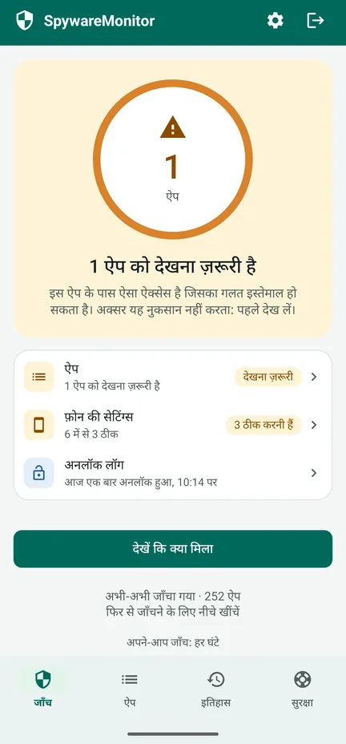
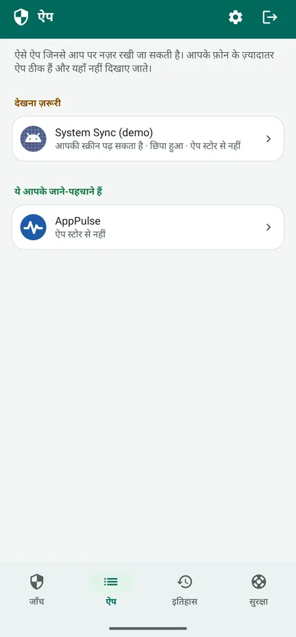
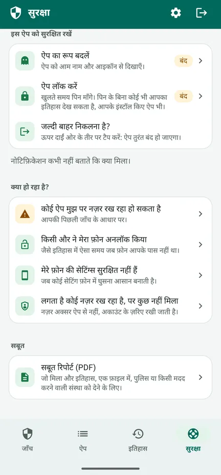
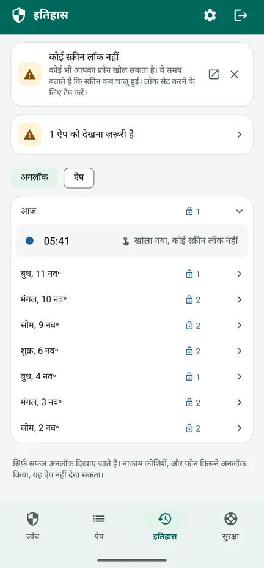

क्या कोई आपके फ़ोन पर नज़र रख रहा है?
SpywareMonitor जाँचता है कि आपके Android फ़ोन के कौन से ऐप आपकी जासूसी के लिए इस्तेमाल हो सकते हैं – और आसान भाषा में बताता है कि क्यों।
उन सबके लिए जिन्हें डर है कि उनका पार्टनर, पूर्व पार्टनर या कोई और चुपके से उनके फ़ोन के ज़रिए उन पर नज़र रख रहा है। न इंटरनेट, न विज्ञापन, न अकाउंट: कुछ भी आपके फ़ोन से बाहर नहीं जाता।
Google Play पर पाएँ यह कैसे काम करता है, कदम-दर-कदम (अंग्रेज़ी में)
Android 8 और उससे नए फ़ोन के लिए Google Play पर मुफ़्त, चाहें तो एक बार के भुगतान वाला Pro अपग्रेड। हिंदी समेत 10 भाषाओं में।

ज्ञात स्टॉकरवेयर
132 स्टॉकरवेयर ऐप, जिन्हें नाम और साइनिंग सर्टिफ़िकेट से पहचाना जाता है।
छिपे हुए ऐप
बिना आइकॉन वाले ऐप, या ऐसे नाम वाले ऐप जो Android का हिस्सा होने का दिखावा करते हैं।
नज़र रख सकने वाले ऐप
ऐसे ऐप जो आपकी स्क्रीन या नोटिफ़िकेशन पढ़ते हैं, या डिवाइस एडमिन हैं।
फ़ोन की सेटिंग्स
कोई स्क्रीन लॉक नहीं, USB डीबग करना चालू, या ऐसी दूसरी सेटिंग्स जिनसे फ़ोन में घुसना आसान हो जाता है।
आगे के सुरक्षित कदम
क्या करें, और किस क्रम में, ताकि सामने वाले को पता न चले।
कुछ भी फ़ोन से बाहर नहीं जाता
इंटरनेट की अनुमति नहीं: न विज्ञापन, न ट्रैकिंग, न अकाउंट।
देखें यह कैसे काम करता है
83 सेकंड का वीडियो देखें (अंग्रेज़ी में) – ऐप आपका फ़ोन कैसे जाँचता है, नारंगी और लाल का क्या मतलब है, और उसके बाद क्या करें – या नीचे स्क्रीन देखें। YouTube पर देखें



मुफ़्त: जाँच
- हर ऐप की जाँच, और ज्ञात स्टॉकरवेयर की सूची से मिलान
- नारंगी: ऐसा ऐक्सेस जिसका गलत इस्तेमाल हो सकता है – अक्सर यह नुकसान नहीं करता, इसलिए पहले देख लें। लाल: ज्ञात स्टॉकरवेयर।
- हर ऐप के कारण, और उसे किसने बनाया
- फ़ोन की सेटिंग्स, हर एक के साथ उसे ठीक करने का बटन
- सुरक्षा टैब: आपकी स्थिति के हिसाब से कदम, सुरक्षित क्रम में
- तुरंत बाहर निकलें: ऊपर दाईं ओर का तीर ऐप को तुरंत बंद कर देता है
Pro: एक बार भुगतान, कोई सब्सक्रिप्शन नहीं
- अपने-आप जाँचें: एक बटन से हर घंटे जाँच। नोटिफ़िकेशन कभी नहीं बताता कि क्या मिला – उसमें बस ऐप का नाम और "खोलने के लिए टैप करें" होता है – और आप उसे एक घंटा देर से भी दिखा सकते हैं।
- अनलॉक लॉग: आपका फ़ोन कब अनलॉक हुआ, ताकि पता चले कि कहीं किसी और ने तो इसे इस्तेमाल नहीं किया
- इतिहास: कौन सा ऐप कब इंस्टॉल हुआ, कब उसे ऐक्सेस मिला या कब हटाया गया
- सबूत रिपोर्ट (PDF) ऐप की भाषा में, पुलिस या किसी मदद करने वाली संस्था को दिखाने के लिए
- ऐप का रूप बदलें और ऐप लॉक करें: ऐप को नोट्स, मौसम, रेसिपी या प्लानर के रूप में दिखाएँ, और पिन या फ़िंगरप्रिंट से खोलें
आपका इतिहास मुफ़्त वर्शन में भी दर्ज होता रहता है। Google की खरीद रसीद वाले ईमेल और Play के ऑर्डर इतिहास में ऐप का नाम दिखता है।
सुझाई गई सेटिंग: 5 कदमों में ऐप को सुरक्षित करें (अंग्रेज़ी में)
कुछ भी हटाने से पहले
- स्पाइवेयर हटाने से उसे इंस्टॉल करने वाले व्यक्ति को पता चल सकता है। पहले अपनी सुरक्षा के बारे में सोचें।
- सबूत संभालकर रखें: सबूत रिपोर्ट, स्क्रीनशॉट, या किसी दूसरे फ़ोन से खींची गई फ़ोटो।
- किसी भरोसेमंद व्यक्ति, पुलिस या हेल्पलाइन से बात करें, हो सके तो ऐसे फ़ोन से जिस पर नज़र न रखी जा रही हो। ज़्यादातर देशों में घरेलू हिंसा या दुर्व्यवहार के लिए मुफ़्त हेल्पलाइन होती है।
- ज़रूरी पासवर्ड किसी दूसरे डिवाइस से बदलें।
- अगर आप तुरंत खतरे में हैं, तो अपने यहाँ का आपातकालीन नंबर डायल करें।
ऐप का सुरक्षा टैब आपकी स्थिति के हिसाब से आपको इन कदमों से गुज़ारता है। पढ़ें कि कुछ मिलने पर क्या करें (अंग्रेज़ी में), और पहले ऐप को ही सुरक्षित करें (अंग्रेज़ी में): उसका रूप बदलें और उसे पिन से लॉक करें।
पूरी जानकारी
यह क्या-क्या जाँचता है
- 132 ज्ञात स्टॉकरवेयर ऐप (नाम और साइनिंग सर्टिफ़िकेट)
- ऐसे ऐप जिनका ऐप की सूची में कोई आइकॉन नहीं है
- सुलभता, नोटिफ़िकेशन ऐक्सेस और डिवाइस एडमिन
- ऐप स्टोर के बजाय किसी फ़ाइल या दूसरी जगह से इंस्टॉल किए गए ऐप
- जोखिम भरे मेल, जैसे बैकग्राउंड में जगह के साथ माइक्रोफ़ोन और SMS
- स्क्रीन लॉक, USB डीबग करना, डेवलपर के लिए सेटिंग और टूल, दूसरे ऐप इंस्टॉल कर सकने वाले ऐप, और किसी और के मैनेज किए जा रहे फ़ोन
- फ़ोन के रूट होने के निशान, सिर्फ़ तब दिखाए जाते हैं जब मिलें
ऐसी प्राइवेसी जिसे आप खुद जाँच सकते हैं
SpywareMonitor के पास इंटरनेट की अनुमति नहीं है, इसलिए यह कहीं भी कुछ नहीं भेज सकता। इसका डेटा क्लाउड बैकअप में नहीं जाता। ज्ञात स्टॉकरवेयर की सूची ऐप के अंदर ही है और ऐप के साथ अपडेट होती है। प्राइवेसी पॉलिसी (अंग्रेज़ी में)।
अपनी सीमाओं के बारे में ईमानदार
कोई भी स्कैनर पक्का नहीं कह सकता कि फ़ोन 100% साफ़ है। वर्क प्रोफ़ाइल के ऐप, और ऐसे फ़ोन पर स्पाइवेयर जिसका रूट होना अच्छी तरह छिपाया गया हो, किसी भी आम ऐप को नहीं दिखते। रूट होने के निशान मिलने पर SpywareMonitor आपको बताता है। नज़र बिना किसी ऐप के, अकाउंट के ज़रिए भी रखी जा सकती है।
भाषाएँ और फ़ोन
10 भाषाएँ: हिंदी, अंग्रेज़ी, नॉर्वेजियन, डच, जर्मन, फ़्रेंच, स्पैनिश, पोलिश, चीनी और अरबी। Android 8 और उससे नए फ़ोन।
अक्सर पूछे जाने वाले सवाल
कैसे पता करें कि मेरे Android फ़ोन में स्पाइवेयर है?
ऐसे अनजान ऐप देखें जो ऐप की सूची में छिपे हुए हैं, आपकी स्क्रीन (सुलभता) या नोटिफ़िकेशन पढ़ सकते हैं, डिवाइस एडमिन हैं, या Play Store के बजाय किसी फ़ाइल से इंस्टॉल किए गए हैं। SpywareMonitor यह सब जाँचता है और आपके ऐप को 132 ज्ञात स्टॉकरवेयर ऐप की सूची से मिलाता है।
क्या SpywareMonitor मेरा डेटा कहीं भेजता है?
नहीं। ऐप के पास इंटरनेट की अनुमति ही नहीं है, इसलिए कुछ भी आपके फ़ोन से बाहर नहीं जा सकता। न अकाउंट, न विज्ञापन, न ऐनालिटिक्स।
क्या मुझे स्पाइवेयर तुरंत हटा देना चाहिए?
हटाने से उसे इंस्टॉल करने वाले व्यक्ति को पता चल सकता है। पहले अपनी सुरक्षा के बारे में सोचें, सबूत संभालकर रखें, और किसी भरोसेमंद व्यक्ति, पुलिस या हेल्पलाइन से बात करें, हो सके तो ऐसे फ़ोन से जिस पर नज़र न रखी जा रही हो।
क्या SpywareMonitor हर तरह का स्पाइवेयर खोज सकता है?
कोई भी स्कैनर यह वादा नहीं कर सकता। वर्क प्रोफ़ाइल के ऐप और रूट किए गए फ़ोन पर स्पाइवेयर किसी भी आम ऐप को नहीं दिखते। SpywareMonitor यह बात साफ़-साफ़ बताता है और दिखाता है कि वह क्या जाँच सकता है।
क्या SpywareMonitor मुफ़्त है?
जाँच, फ़ोन की सेटिंग्स और सुरक्षा के कदम मुफ़्त हैं। Pro एक बार का भुगतान है, कोई सब्सक्रिप्शन नहीं। इसमें मिलते हैं: बिना कुछ बताए नोटिफ़िकेशन के साथ अपने-आप जाँच, इतिहास, अनलॉक लॉग, PDF में सबूत रिपोर्ट, और ऐप का रूप बदलना और पिन लॉक।
क्या मैं SpywareMonitor को अपने फ़ोन पर छिपा सकता/सकती हूँ?
Pro में आप ऐप का रूप बदलकर उसे नोट्स, मौसम, रेसिपी या प्लानर जैसा दिखा सकते हैं और उसे पिन से लॉक कर सकते हैं। इसके नोटिफ़िकेशन कभी नहीं बताते कि क्या मिला। ऊपर दाईं ओर का तीर ऐप को तुरंत बंद कर देता है। लेकिन Google की खरीद रसीद वाले ईमेल और Play के ऑर्डर इतिहास में ऐप का नाम दिखता है।
लगता है कोई नज़र रख रहा है, पर कुछ नहीं मिला। अब क्या करूँ?
नज़र अक्सर ऐप से नहीं, अकाउंट के ज़रिए रखी जाती है। Google Maps में जगह शेयर करना बंद करें, अपने Google अकाउंट से जुड़े डिवाइस और रिकवरी ईमेल व नंबर जाँचें, और किसी छिपे हुए ट्रैकर की तलाश करें। अकाउंट में बदलाव किसी दूसरे डिवाइस से करें। मदद में और जानकारी (अंग्रेज़ी में)।
गाइड: Android पर स्पाइवेयर
कदम-दर-कदम मदद
Nordic Appworks के और ऐप
UpdateMonitor — आपके फ़ोन पर हर ऐप अपडेट, इंस्टॉल और हटाए जाने का इतिहास, अनुमतियों में हुए बदलावों के साथ। RebootMonitor — आपका फ़ोन आखिरी बार कब रीस्टार्ट हुआ। SpywareMonitor की तरह: बिना इंटरनेट और बिना विज्ञापन।
संपर्क
सवाल या सुझाव: support@spywaremonitor.app
ज्ञात स्टॉकरवेयर की सूची Echap के stalkerware indicators से ली गई है, जो CC BY 4.0 लाइसेंस के तहत है।